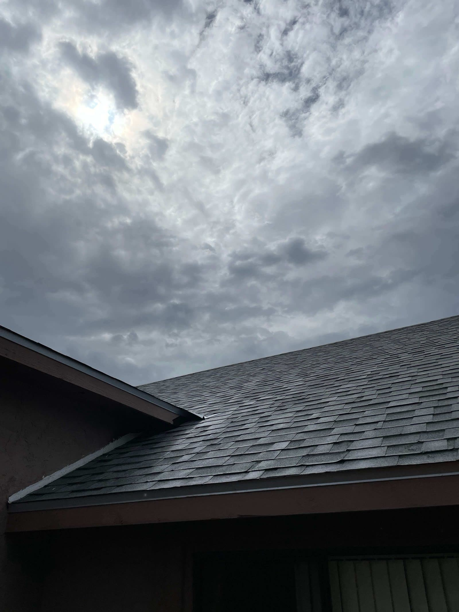

Gutters · Tucson, AZ
Seamless Gutter Installation in Tucson
A monsoon dumps a crazy amount of water in a hurry. Seamless gutters sized and laid out right carry it away from your roof edge, your walls and your foundation, which protects the whole house.
- Seamless rain gutters
- Gutter guards
- Repair & replacement
- Monsoon-ready drainage
Drainage Done Right
Get the water away from the house, fast
We don't get much rain here, but when we do it comes down hard. With no gutters, all that monsoon runoff sheets right off the roof and pools up against your walls and foundation, and that's where you get erosion, staining and water working its way inside.
We run seamless gutters formed to fit your house, sized and pitched to handle a desert downpour, with downspouts that carry the water well clear of the foundation. Throw on gutter guards and they stay clear of debris and keep flowing.
- Custom seamless gutters
- Correct sizing & slope for monsoons
- Downspouts routed away from foundation
- Optional gutter guards
Seamless Gutters
Custom-formed on site for fewer leaks and a clean, continuous look.
Gutter Guards
Keep leaves and debris out so water flows freely when it matters.
Repair & Replace
Fix sagging, leaking or undersized gutters before the next storm.
Why It Matters
Gutters protect more than your roof
Good drainage is really foundation protection. Get the runoff carried away the right way and you steer clear of the soil washing out around the house, stains running down the walls, and moisture creeping into the structure.
We lay out the whole thing, gutter size, the slope, where the downspouts go and where they dump, so monsoon water ends up where it belongs, away from your house.
- Protects foundation & landscaping
- Prevents wall staining & erosion
- Reduces roof-edge water damage
- Custom-fit to your roofline
Related Guides
Guides on gutters & drainage
Gutters come up in a lot of what we write about roofs, because what ends up in them tells you plenty about the roof above. A few worth reading:
How clean gutters help a roof last longer Why clogged gutters cause leaks under concrete tile Granules in your gutters and other signs of a worn-out roof Scuppers and drainage on Tucson flat roofs
How It Works
Our Roofing Process
Assessment
We measure your roofline and plan gutter sizing, slope and downspout routing.
Custom Forming
Seamless gutters formed on site to fit your home exactly.
Installation
Securely hung with proper slope, sealed end caps and downspouts.
Walkthrough
We confirm flow and routing, and add guards if you've chosen them.
FAQ
Roofing Questions, Answered
Still wondering about something? Call us at 520-753-1758 — straight answers, no pressure.
Ask Us DirectlyWhy are gutters important in Tucson if it rarely rains?
Because when it does rain here, it really comes down. A monsoon drops a ton of water fast, and with no gutters that runoff washes out your soil and pools against the foundation and walls. Gutters protect the whole house, not just the roof.
What are seamless gutters, and are they worth it?
Seamless gutters get formed right there on your driveway in one continuous piece per run, instead of snapped together from sections. Fewer seams means fewer spots to leak and a cleaner look.
Do I need gutter guards?
Guards keep leaves and junk out so the gutters keep flowing in a hard rain and you're not up there cleaning them all the time. Worth the add-on, especially if you've got trees over the house.
How much do gutters cost in Tucson?
It comes down to how many linear feet you need, the profile, and whether you add guards. We measure the run and quote it up front — the number we give you is the number you pay. If your existing gutters can just be repaired instead, we’ll tell you that too.
Can you repair my existing gutters?
Yep, we fix sagging, leaking, pulled-apart or too-small gutters, and we'll re-route downspouts that are dumping water somewhere they shouldn't.
Do you install gutters when you replace a roof?
We can line up the gutter work with a roof replacement so it all gets done together, clean and in one shot.
Ready for monsoon season?
Get seamless gutters sized for a desert downpour. Ask us for a free gutter installation estimate.
Let's Talk
Let's Take a Look at Your Roof
Tell me what's going on up there — a leak, storm damage, an old roof that's seen better days, or a full replacement — and we'll get you on the books for a free inspection.